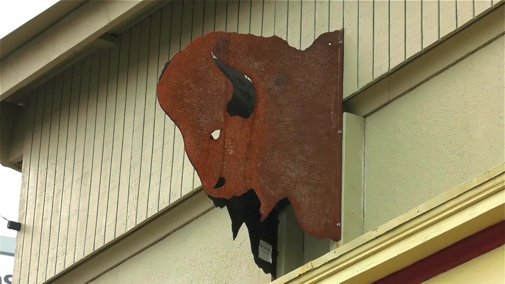

A dream of a bison — and a place to belong.
Bison Coffeehouse was founded by Loretta Guzman, a native Portlander and member of the Shoshone-Bannock Tribes of Fort Hall, Idaho. While recovering from stage 4b cancer, she dreamed of a bison approaching her — a sign her family understood as her grandfather's spirit, and the beginning of both her healing and this shop.
She raised the funds over two years through traditional beadwork, then rehabbed a 1926 building her late father, Gary Guzman, once used for his custom motorcycle shop next door. The doors opened in November 2014. It remains a family enterprise — with family serving as baristas, accountants and managers.
"I wanted a place for Natives to come… a positive environment, something they identify with, a place where they can come in and be proud."